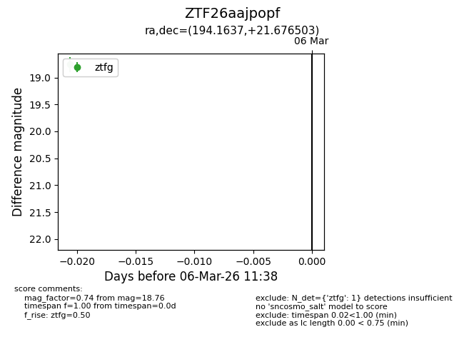
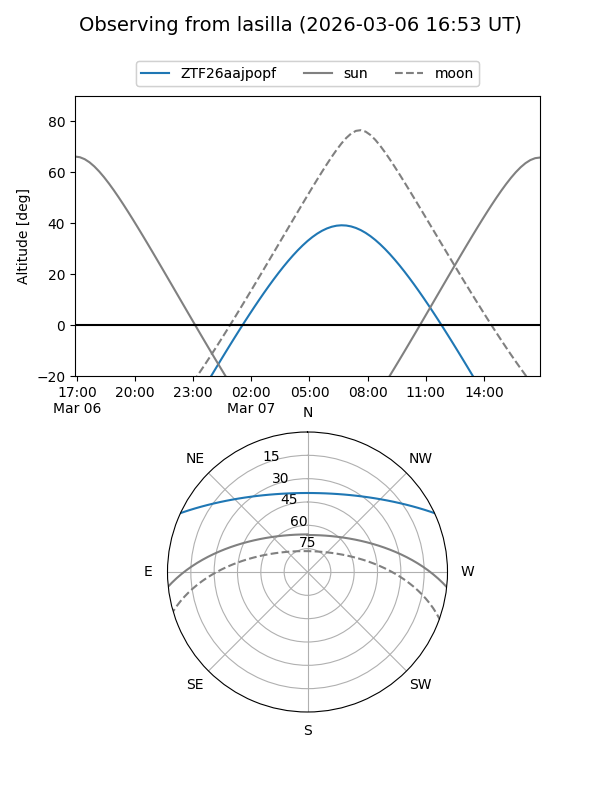
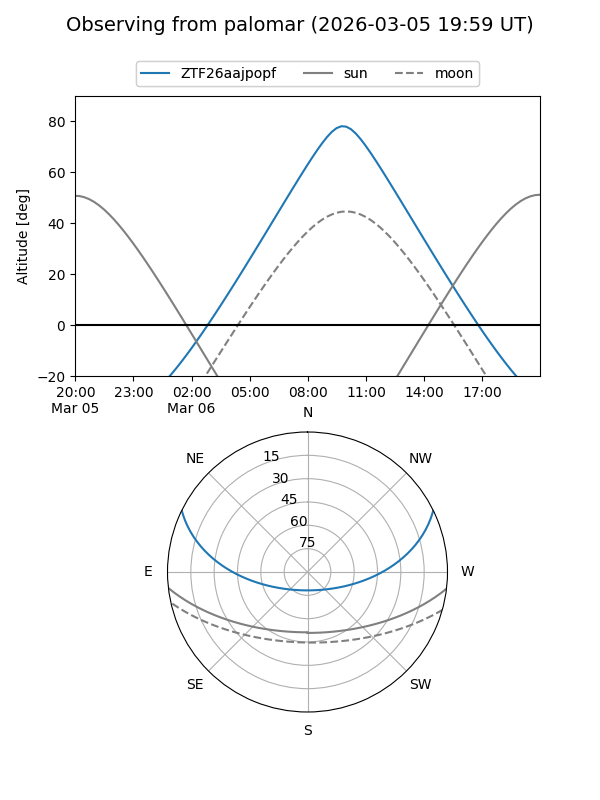

ZTF26aajpopf
Target ZTF26aajpopf at 2026-03-06 11:39
Aliases and brokers:
FINK: link
Lasair: link
ALeRCE: link
alt names
ZTF26aajpopf (ztf,fink_ztf)
Coordinates:
equatorial (ra, dec) = 194.1637,+21.67650
equatorial (HMS+DMS) = 12:56:39.28,+21:40:35.41
galactic (l, b) = (315.4968,+84.42053)
Flags:
Photometry:
last ztfg=18.76
1 ztfg detections
Lightcurve

Visibility


Additional plots